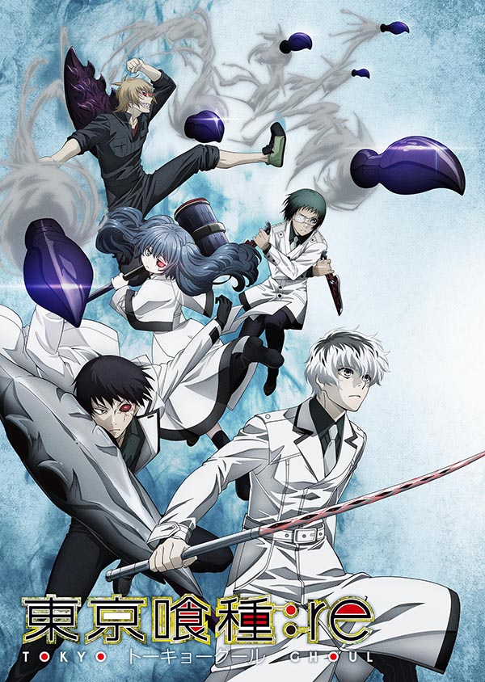

군집에 섞여, 인간의 고기를 먹는다. 인간의 모습을 하고 있으면서도 인간과는 다른 존재…구울. ‘구울’을 구축하고 연구하는 [CCG]는 어떤 한 가지 명제를 달성하기 위해 실험체 집단을 신설한다. ―그 이름은 ‘쿠인쿠스’ ‘정상적인 인간’이 아닌 그들과 사사키 하이세 일등수사관이 도쿄에서 마주 대하는 것은 과연―?!
등장인물 1. 구울 1.1. 안테이크 1.2. 아오기리 나무 1.3. 카네키 팀 1.4. 피에로 마스크 1.5. :re 1.6. 츠키야마 재벌 1.7. V조직 1.8. 와슈의 왕 세력 1.9. 검은 산양 1.10. 그 외 2. CCG 3. 민간인 4. 외전 4.1. JaCk 4.1.1. 구울 4.1.2. 수사관 4.1.3. 민간인 4.2. Pinto 4.2.1. 구울 4.2.2. 민간인 4.3. Joker 4.3.1. 수사관 4.3.2. 구울 5. 게임 : Jail